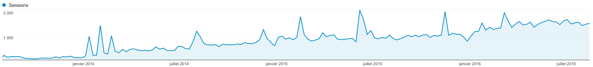

PHP-DI 5.4 released
Posted by Matthieu Napoli on August 23rd, 2016
I am happy to announce that PHP-DI version 5.4 has been released. Here is the list of changes in this new version.
Factory parameters
Up to PHP-DI 5.3, factories could take as parameters:
- the container
- the requested entry name, by type-hinting
DI\Factory\RequestedEntry - services, by type-hinting each service (PHP-DI would then use autowiring)
With PHP-DI 5.4 you can now configure explicitly each parameter of the factory with the following syntax:
return [
'Database' => DI\factory(function ($host) {
...
})->parameter('host', DI\get('db.host')),
];You can of course mix type-hinted parameters and configured parameters:
return [
'Database' => DI\factory(function ($host, LoggerInterface $logger) {
...
})->parameter('host', DI\get('db.host')),
];And of course it works with class methods too. A perfect example to illustrate that is Doctrine's entity manager factory:
use Doctrine\ORM\EntityManager;
return [
EntityManager::class => DI\factory([EntityManager::class, 'create'])
->parameter('connection', DI\get('db.params'))
->parameter('config', DI\get('doctrine.config')),
'db.params' => [
'driver' => 'pdo_mysql',
'user' => 'root',
'password' => '',
'dbname' => 'foo',
],
'doctrine.config' => ...,
];You can read the original issue: #362, as well as all the pull requests: #428, #430, #431 and #432. You can find that feature in the "factories" documentation.
This feature was contributed by @predakanga.
Other improvements
- #429: performance improvements in definition resolution.
- #421: once a
ContainerBuilderhas built a container, it is locked to prevent confusion when adding new definitions to it. - #423: improved exception messages.
Other news
In other news the project passed 800 stars on GitHub, has now received contributions from 39 different people and has been installed more than 200 000 times through Packagist since its move to the PHP-DI organization.
PHP-DI is now also used in Pimcore, an open source content management platform. You can read about it in their documentation: Dependency injection in Pimcore.
And just for fun here is a graph showing the evolution of the traffic (per week) on PHP-DI's website since 2013:

Thanks to all contributors and users!